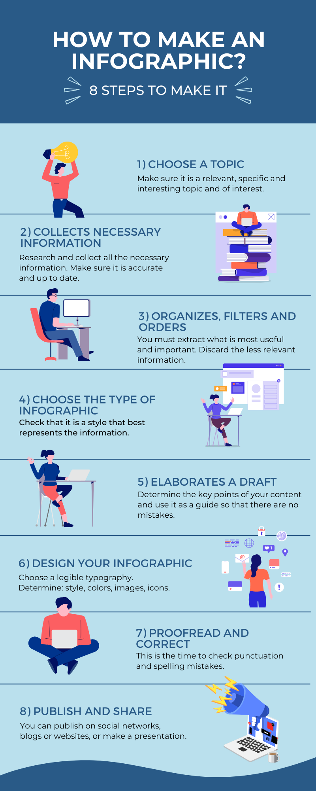

The Challenge - Vectr: Fraction Infographic
 The Challenge
The Challenge
Your challenge is to explore what an infographic is and how it can be used to educate others about a topic. You will then use the shapes, elements, and other pictures in Vectr to create an infographic about fractions.

What I'll Learn
- I CAN use Vectr to create digital art.
- I CAN explain what a numerator and denominator are.
- I CAN define an equivalent fraction.
- I CAN compare fractions.